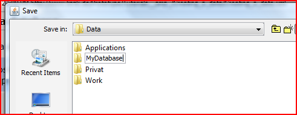
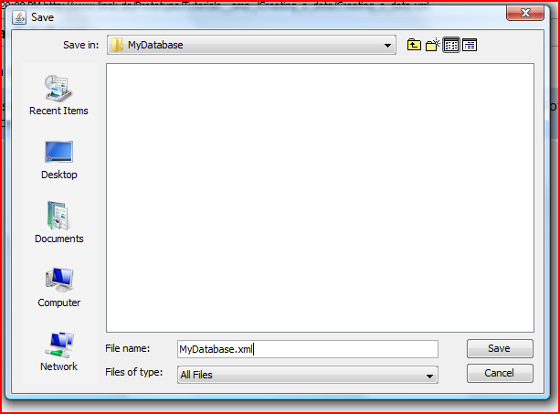
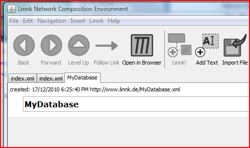
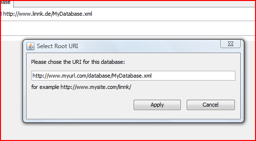

You create a database under the menu point File / New Database
You can chose a the filename of the root node of your database in the appearing dialog (Please note that it is available to place the database in an otherwise empty folder on your hard drive).


After the database has been created, the empty root document of the database should be displayed:

As a next optional but advisable step, the URI of this database can be set. The default URI is http://www.linnk.de/[Your Database Name.xml]. To change this name, select the menu item Linnk / Select URI.
The selected address is mostly virtual. You do not need access to the domain or the server to select an URI. However, it is advisable to chose a server and directory you have access to. It is later easy to upload your Linnk database to the specified address, which will make all the documents available in a Linked Data fashion.

Selecting a new URI will close the database. You can reopen the database by selecting File / Open and choosing the XML file you have created (Hint: the next time you start Linnk, your database should be listed under Menu File / Root Documents).
Please see the next part of the tutorial to see how to: